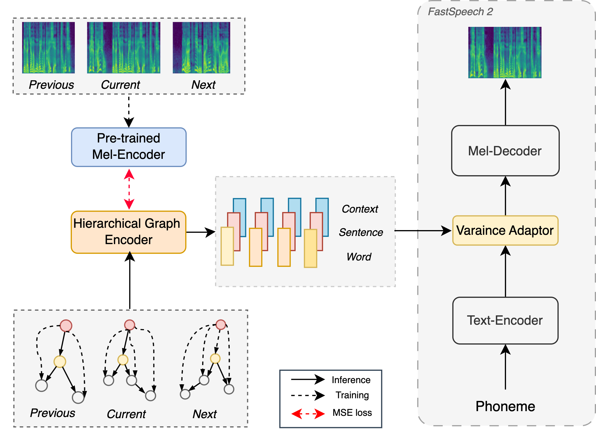

ASLP TTS Demo Page
1. Abstract
ASLP TTS大模型demo页面，包含三个部分
1.精品拟人对话合成
2.精品有声书合成
3.zero shot音色克隆

2. Demos
2.1 Short-form Speech
2.2 Long-form Speech
References:
[1] Tomoki Hayashi, Shinji Watanabe, Tomoki Toda, Kazuya Takeda, Shubham Toshniwal, and Karen Livescu, "Pre-trained text embeddings for enhanced text-to-speech synthesis," in Proc. Interspeech, 2019, pp. 4430–4434.
[2] Detai Xin, Sharath Adavanne, Federico Ang, Ashish Kulkarni, Shinnosuke Takamichi, and Hiroshi Saruwatari, "Improving speech prosody of audiobook text-to-speech synthesis with acoustic and textual contexts," in Proc. ICASSP, 2023, pp. 1–5.
[3] Shun Lei, Yixuan Zhou, Liyang Chen, Zhiyong Wu, Shiyin Kang, and Helen Meng, "Towards expressive speaking style modelling with hierarchical context information for Mandarin speech synthesis," in Proc. ICASSP 2022, 2022, pp. 7922–7926.